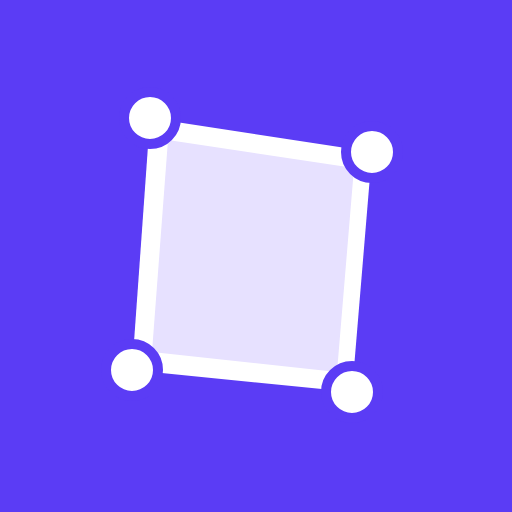
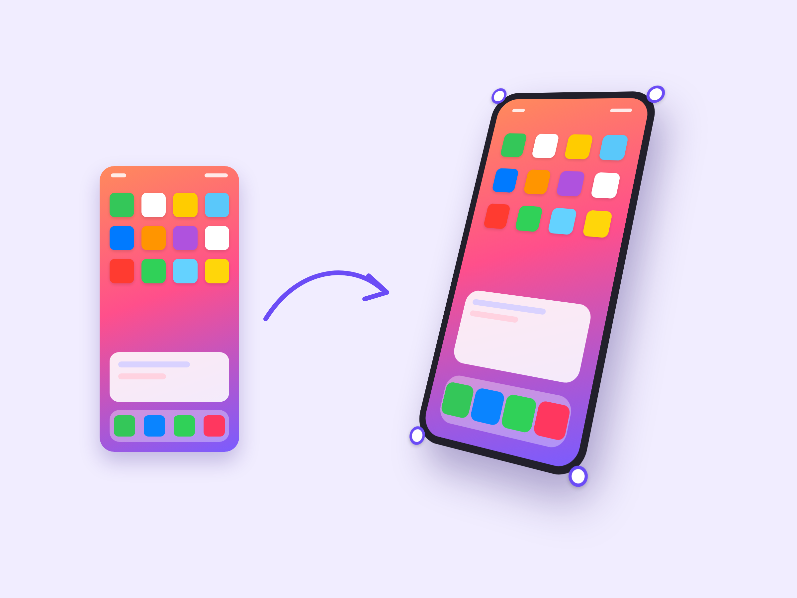

CornerPin
Pin images onto any surface in real perspective

CornerPin is an app for Canva. Fit an image onto a phone, banner, sign, poster, box or any flat surface, then pin its four corners to match its perspective. Adjust the size, corner radius and 3D tilt, then click Apply.
Made by orailnoor · slidekali@gmail.com